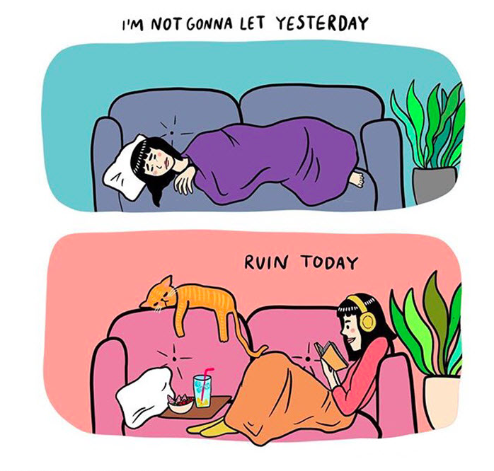
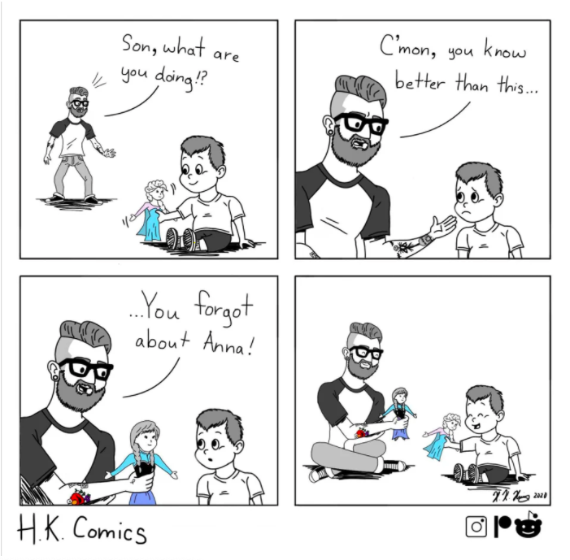

Veterans can be at greater risk for depression and suicide due to their experiences in the military.
Since the early 2000's, the number of veteran suicide deaths has slowly been increasing.
 Check in on veterans in your community to make sure they are okay. Make sure that they know they can open up to you and talk about their suicidal thoughts.
If they show signs of suicide or confess suicidal thought to you, be sure to refer them to a professional or the Suicide Prevention Lifeline and Veterans Crisis Line